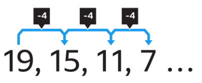

Sequences & Symmetric Bounds
A second idiomatic variation of the for loop is used to generate sequential data, such as counting from start to finish:
for (int var = start; var < finish; update-var)...In this for loop the actions in the body are executed with the variable var set to each value between start and finish, inclusive.
Because we include both ends, we say that the bounds used in this loop are symmetric. Use this loop to count from 1 to 100 like this:
for (int i = 1; i <= 100; ++i)Here's another example. In this pattern, the loop variable is used to produce a sequence of data.
int factorial(int n)
{
int result = 1;
for (int i = 1; i <= n; ++i) { result *= i; }
return result;
}As you can see, this example uses the loop to implement the factorial function, the product of the integers between 1 and n. The for loop variable i goes from 1 to n (inclusive). The body of the loop updates result by multiplying it by i.
Counting Down
As the factorial example shows, the update update expression need only move the loop variable closer to the loop bounds. It must advance the loop; it doesn't need to increment. Here's an example:

Here we want to start the loop at a large number, and decrease the index by four on each iteration. In other words, we want to count down rather than counting up. Here's what this looks like in code:
for (int i = 19; i >= 0; i -= 4)
cout << i << " ";
cout << endl;Don't use conditions like i != 0, unless you are certain that the condition will be met. Because we are decrementing by four, we will never set i to 0 and so we would have an infinite or endless loop.
 This course content is offered under a
CC
Attribution Non-Commercial license. Content in this course
can be considered under this license unless otherwise noted.
This course content is offered under a
CC
Attribution Non-Commercial license. Content in this course
can be considered under this license unless otherwise noted.